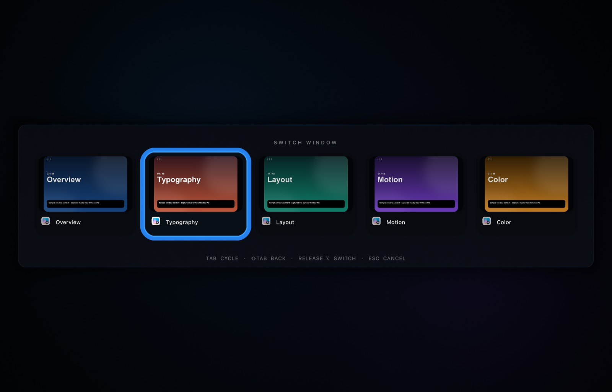
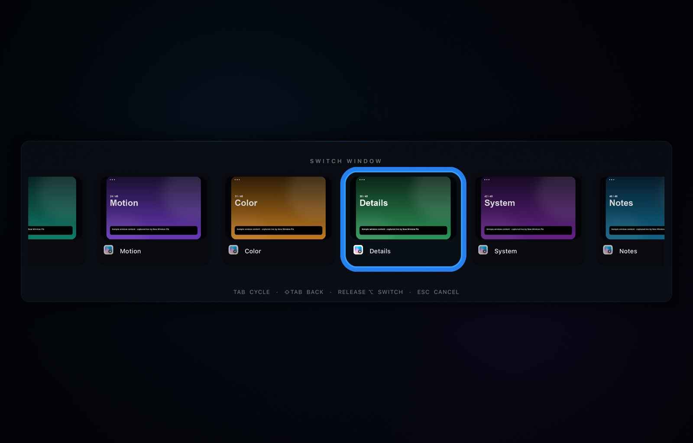

Dock clicks make windows
Click a running app's Dock icon and it receives its own New Window command. Hold ⇧ — or any other modifier — for the Dock's normal behaviour. Folders, Trash, right-clicks and drags are left alone.
macOS 14+ · Universal · Free
A tiny menu-bar app with two jobs done properly: clicking a Dock icon opens a new window, and ⌥Tab switches between individual windows — on screen in about a fifth of a millisecond.
Requires macOS 14 Sonoma or later. Apple silicon and Intel. No account, no telemetry, no network access.

Click a running app's Dock icon and it receives its own New Window command. Hold ⇧ — or any other modifier — for the Dock's normal behaviour. Folders, Trash, right-clicks and drags are left alone.
One entry per on-screen window on the current Space, with titles. Tap Tab to cycle, arrows to move, release ⌥ to raise the exact window. Esc cancels. System ⌘Tab stays untouched.
An optional mode shows up to five large window cards with live thumbnails, app icons and titles. Captures start only after the switcher is on screen, so they never delay it.
No window is created when you invoke it. One resident Metal surface is ordered in at launch and left at alpha zero, so revealing either overlay is an alpha flip — not a window, a layout pass, or a GPU wait.
CAMetalLayer view.$ ./scripts/switcher-benchmark.sh
OVERLAY_BENCHMARK reveal_median_us=139.0
SWITCHER_BENCHMARK reveal_median_us=206.9
warm_end_to_end_median_us=433.7
cold_scan_us=26439.0Snapshot mode turns each entry into a card: a live thumbnail of the window, the app icon, the title, and a pixel-accurate rounded selection outline. It is optional. The compact icon row stays the default, so the switcher still opens instantly if Screen Recording hasn't been granted.

Documentation images use sample window content; the app captures the real windows on your Mac.
Grab the latest release, unzip it, and move New Window Plz.app into /Applications. Move it there before granting permissions so macOS remembers them.
The app lives in the menu bar. Choose Grant Accessibility Access, then enable New Window Plz in System Settings → Privacy & Security → Accessibility.
Turn on Window switcher → Show window snapshots and grant Screen Recording when asked. Relaunch the app after granting it.